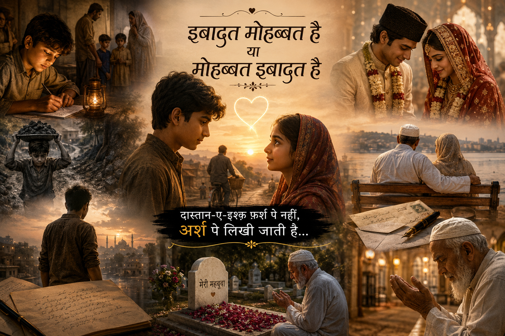

इबादत मोहब्बत है या मोहब्बत इबादत है — इसी खोज में दो रूहें, दो ना-मेहरम, अपनी-अपनी शक्ल में निकलीं। एक फ़र्श पर, एक अर्श पर… मुकम्मल इश्क़ की दास्तां शायद कहीं लिखी जा चुकी थी। पर क्या मोहब्बत सिर्फ़ ख़यालों में मिलती है, या हक़ीक़त में भी? इसी दास्तां की तलाश में दो नौजवान आपस में टकराए… और फिर जो होना था, वही हुआ।
लेकिन रुको… इतनी जल्दी नहीं। इस कहानी को शुरू से शुरू करते हैं।
एक लड़का… जिसने महज़ 4 साल की उम्र में अपनी माँ का साया खो दिया। माँ के गुज़र जाने के बाद हालात ऐसे बने कि उसके पिता ने भी उसे अपनाने से इंकार कर दिया। आगे की परवरिश के लिए उसे गाँव में अपनी नानी के पास भेज दिया गया।
उम्र छोटी थी, मगर सज़ा बहुत बड़ी मिली। एक तरफ़ ग़म का सिला था… और दूसरी तरफ़ उसी दौर में एक गुड़िया (छोटी बच्ची) का जन्म हुआ, जिसे खुशियों की तरह मनाया गया। नासमझ उम्र में ही उसने समझने की कोशिश की—कि उसे ये सज़ा किस बात की मिल रही है। लगभग 5 साल बाद शहर से ख़बर आई कि उसके पिता ने दूसरी शादी कर ली है। अब उसके दो छोटे भाई भी हो चुके थे। उनकी देखभाल के लिए उसे गाँव से वापस बुला लिया गया। फिर वही… छोटी सी उम्र और बड़ी ज़िम्मेदारियाँ।
छोटे भाइयों की गलती पर सज़ा उसे मिलती। जब भाई स्कूल जाते, तो उनके सुबह के नाश्ते के लिए उसे सुबह 4 बजे उठाया जाता। महज़ 25 किलोमीटर दूर साइकिल चलाकर कोयला लाने भेजा जाता, ताकि घर का चूल्हा जल सके। इतनी कम उम्र में ही उस पर ज़िम्मेदारियों का बोझ डाल दिया गया। वो खुद भी छोटे भाइयों के साथ पढ़ने जाता, लेकिन ये वो ज़माना था जहाँ सौतेली माँ का ज़ुल्म आम बात थी। वो हर दर्द चुपचाप सह जाता, क्योंकि पिता से शिकायत करने पर उसे गर्म लोहे के सलिये से डराया जाता। ज़िम्मेदारियों की इस दौड़ में एक ऐसा वक़्त भी आया, जब उसे पढ़ाई छोड़कर पैसे कमाने के लिए कहा गया।
उसकी उम्र सिर्फ़ 12 साल थी… ये 90 के दशक का वो दौर था, जब उसने सिर्फ़ 7 चोपड़ी यानी (7 क्लास) तक पढ़ाई की है। ख़याल आया—ख़ुदा कहाँ है, इतना दर्द किस लिए… क्या गुनाह है मेरा, यही कि मेरी सगी माँ नहीं है इसलिए? देखो नादान दिल ख़ुदा से ख़ुदा की शिकायत कर रहा है। एक लम्हा ठहर-सा गया—ख़ुदा तो मेरा भी है ना… सुना है ख़ुदा 70 माँओं से ज़्यादा मोहब्बत करते हैं। दिल ने कहा—लाज़मी है, दर्द के बाद सुकून से नवाज़े। देखो, ये वो ज़माना था—पिता से आँखें मिलाकर बात नहीं कर सकते थे, तो चुपचाप सौतेली माँ का दर्द सहते रहे। वो सुबह के 4 बजे से 7 बजे तक ज़िम्मेदारियाँ निभाया करते। सौतेली माँ को वो भी नहीं देखा गया—पिता जी से कहकर उन्होंने पान मसाला का गल्ला खुलवा दिया, जहाँ ज़िम्मेदारी और काम दोनों बढ़ गए।
13 की उम्र में—4 बजे कोयला लाने से लेकर भाइयों को स्कूल भेजना, नौकरी करना और शाम को गल्ला चलाने की ज़िम्मेदारी थी। इस ज़िंदगी से वो मायूस हो गए, और अब ये सब आदत बन चुकी थी। उन्हें भी यही बात सताने लगी। 1 साल और बीत चुका था इस मायूसी भरी ज़िंदगी को जीते-जीते… यूँ ही हर दफ़ा की तरह 4 बजे उठाया गया कोयले के लिए, लेकिन आज की सुबह कुछ ख़ास थी। मौसम का मिज़ाज अलग था—खुशनुमा-सी सुबह लगने लगी… क्योंकि आज एक लड़की को देखकर दिल में नरमी महसूस होने लगी। फिर नसीब ने अपना रास्ता मोड़ लिया—ख़ुदा मेहरबान हुए उन पर। फिर यूँ हुआ कि वो तलाश करने लगे—कौन है, क्या नाम है, और किसकी बेटी है। महज़ दो दिन की लगातार तलाश के बाद पता चला कि ये कोयले वाले की बेटी है।
रुख थम-सा गया… शिकायत की, ख़ुद से कहा—छुपाकर के रखा था इनके माँ-बाप ने, अभी तक इनके दीदार नहीं हुआ। कहाँ से होता… कहाँ मैं और कहाँ वो—व्यापारी की बेटी। दिल को समझाया—मैं कहाँ 15 साल का, और वो 10 साल की छोटी बच्ची…
अब ये लड़की उनके लिए खुशनुमा-सा एहसास बन गई… 25 km दूर कोयला तो लाते थे, पर उनका दीदार करते हुए आते थे। इस एकतरफ़ा मोहब्बत कब दोतरफ़ा हो गई, पता ही नहीं चला। डर लगता था उन्हें अपने नसीब पर—कहीं इन्हें भी खो न दूँ… फिर भी आज़माई अपनी नसीब। अब दो ना-मेहरम की उम्र बढ़ रही थी—लड़के की उम्र 16 हो चुकी थी और लड़की 11 की। ये वो ज़माना था जहाँ 11 साल की लड़की की उम्र में ही उसकी शादी कर दी जाती थी, और ये वो दौर था जहाँ मोहब्बत का ज़िक्र करने पर जान से मार दिया जाता था। बस ये सब सिर्फ़ दो शख़्स के बीच की बातें बनकर रह गईं।
और फिर दो ना-मेहरम ने इस मोहब्बत को ख़त्म करने का फ़ैसला किया। ये दोनों अच्छे से जानते थे कि ये बहुत मुश्किल है, लेकिन ख़ुदा का लिखा हुआ कैसे बदल सकते हैं… फिर लड़के ने ख़ुदा की बारगाह में अर्ज़ किया—फिर से किस बात की सज़ा मिली? क्या गुनाह है मेरा? इस सवाल का जवाब ना मिल सका… और इस मोहब्बत को यहीं दफ़न करने का फ़ैसला कर लिया। यही लम्हा… यहीं थम-सा गया।
फिर वही ज़िम्मेदारियाँ निभाने के लिए मजबूर किया गया, और लड़की का ख़याल भी दिल और दिमाग़ से निकल ना पाया। दोनों को बिछड़े 1 साल हो चुका था। फिर घर का बड़ा भाई होने के नाते, छोटे भाई और पिता जी की ज़िम्मेदारी उठाने लगा। सब कुछ खो गया—ऐसा लगने लगा, जीने की कोई उम्मीद नहीं थी। बहुत कोशिश की खुद को ख़त्म कर दूँ… पर कहीं न कहीं उम्मीद थी कि कुछ तो लिखा होगा तक़दीर में।
बस इस तरह वक़्त बीत गया… सब कुछ सामान्य हो गया। सौतेली माँ ने एक रिश्ता देखकर निकाह करने का फ़ैसला किया… रूह कांप उठी—उनके सिवा किसी को देखना भी गवारा नहीं था। निकाह कैसे करूँगा—यही सोच खाए जा रही थी ख़याल भी उनका, और ज़िक्र भी उनका… अभी सौतेली माँ ने ज़बरदस्ती रिश्ता फ़िक्स कर दिया। होना क्या था—मेरा दिल गवारा न था। मैंने निकाह से पहले उस लड़की को देखना भी चाहा, पर हिम्मत भी नहीं थी। लेकिन इस दिल में ईमान क़ायम था कि जो नसीब में है, वो होकर रहेगा। और लड़के ने निकाह को क़बूल किया…
और दूसरी तरफ़, लड़की ने भी “क़बूल है” कहकर अपने नसीब को क़बूल किया। और निकाह के फ़ौरन बाद, जब लड़के ने लड़की को निकाह की मुबारकबाद दी और पहली दफ़ा अपनी मोहतरमा को देखा, तो पता चला कि ये कोई और नहीं—वही व्यापारी की बेटी है, जिससे बिछड़े दो साल हो चुके थे। मुकम्मल यक़ीन हो गया—नसीब फ़र्श पे नहीं, अर्श पे लिखा जाता है। ख़ुदा को शुक्रिया कहने के लिए ख़ुदा की बारगाह में शुक्राना नमाज़ अदा की गई। और बेशक, ख़ुदा आज़माइश के बाद सुकून से नवाज़ता है। लड़के ने अपनी इबादत और दुआओं से मोहब्बत को हासिल किया। कहा था ना—दास्तान-ए-इश्क़ फ़र्श पे नहीं, अर्श पे लिखी जाती है… और बेशक, ख़ुदा तकलीफ़ के बाद सुकून से नवाज़ता है।
और ये कोई और नहीं… मेरे दादा और दादी जी हैं। ये एक रियल लाइफ़ स्टोरी है। हमें इस दास्तान से यही सीख मिलती है—इबादत मोहब्बत है या मोहब्बत इबादत…इससे यही सीख हमको मिलती है—इबादत से हर दुआ क़बूल होती है। ख़ुदा और ख़ुदा के फ़ैसलों पर ईमान मुकम्मल करो, और यक़ीन रखो—ख़ुदा बेहतर से बेहतरीन अता करते हैं। ये ज़िंदगी कई लम्हों का सफ़र है, और ज़िंदगी का सफ़र तो अब शुरू हुआ, जहाँ दादी जी 12 की थीं और दादा जी की उम्र 17 की। और फिर उन्होंने सीखा कि ज़िंदगी गुज़ारी नहीं, जिया जाता है। और दादा जी ने कभी खुद के लिए जिया ही नहीं—शायद ज़िम्मेदारियों ने उन्हें मौका भी नहीं दिया। यक़ीन मानो, सफ़र खूबसूरत तब होता है जब हमसफ़र नेक हो। इस खुशनुमा ज़िंदगी को दादा जी और दादी जी ने निकाह के मुकम्मल 20 साल बाद, दादा जी अपने बच्चों का करियर बनाने के लिए इंडिया से 7 समंदर पार सऊदी अरब कमाने चले गए, और दादी जी ने इंडिया में रहकर बच्चों की परवरिश की।
और दादा जी सऊदी से ख़त लिखा करते थे दादी जी के लिए… और वक़्त ने रफ़्तार पकड़ ली। 25 साल बाद, जब दादा जी सऊदी अरब से इंडिया आए, तब दादी जी के साथ परिवार में वक़्त बिताने लगे। दुख तो था—25 साल बातचीत के लिए ख़त लिखने से लेकर टेलीफोन तक का सफ़र गुज़रा, पर ये लम्हा कितना खूबसूरत था। इस तरह वक़्त बीतता गया—दादी जी की उम्र 54 और दादा जी की उम्र 59 हो चुकी थी। सुना है उम्र ढलते-ढलते खूबसूरती भी ढल जाती है—क्या सच है, ये पता चलता है वक़्त के साथ। और वक़्त गुज़रते-गुज़रते दादी जी को जिस्मानी तकलीफ़ होने लगी, और ज़िंदगी ने फिर से रुख मोड़ लिया। महज़ 54 साल की उम्र में दादी जी का हार्ट ट्रांसप्लांट कराया गया। दादा जी को डर था कि कहीं उन्हें इस सर्जरी में खो न दूँ… ख़ुदा का शुक्र है कि सर्जरी सफल रही। कहते हैं—इंसान अपनी बनाई हुई चीज़ों पर गुरूर करता है, लेकिन वक़्त आने पर सबको ख़ुदा की तरफ़ ही जाना होता है।
6 महीने बाद दादी जी की कंडीशन बिगड़ने लगी, और दादा जी को किसी ने कहा—दवा के साथ दुआ भी ज़रूरी है। आपको बता दूँ, मेरे दादा जी 5 वक्त के नमाज़ी हैं, और हर नमाज़ के बाद तिलावत किया करते हैं। और एक वक़्त ऐसा आया कि अचानक दादी जी की तबीयत खराब होने लगी। फ़ौरन दादा जी ने कहा—मैं अभी मस्जिद जाकर पानी फूंकवाकर लाता हूँ। उन्होंने दादी जी को हौसला देकर मस्जिद की तरफ़ कदम बढ़ाए, और ख़ुदा की बारगाह में अपने हमसफ़र की ज़िंदगी के लिए दुआ करते रहे… शायद बहुत देर हो चुकी थी… और ये वो वक़्त था… 21 रमज़ान, 4/5/2020, 11:45 मिनट और 67 सेकंड का वो लम्हा है… जहाँ दादी जी के जिस्म से रूह निकल गई, और वो ये दुनिया छोड़कर जा चुकी थीं। और इस बात से दादा जी भी बेख़बर थे। वो घर की तरफ़ लौटे, तो उन्होंने ग़मगीन माहौल देखा… और वो वक़्त था, जहाँ मैंने अपने पापा, बड़े पापा, भाई और दादा जी को रोते देखा—शायद मैंने ऐसा कभी नहीं देखा था, और कभी देखना भी नहीं चाहूँगी। और आज भी दादा जी दादी जी से नाराज़ हैं… क्योंकि उन्हें लगता है कि वो उन्हें अलविदा कहे बिना ही दुनिया से चली गईं।
और जब बात दादी जी को दफ़नाने की आई, तो उस अज़ीज़ मर्द की ताकत भी नज़र नहीं आ रही थी। जब दादी जी को दफ़नाया गया, तो दादा जी ने भी गुज़ारिश की—कि मुझे भी ज़िंदा दफ़ना दिया जाए… लेकिन ये कहाँ मुमकिन है। आज भी दादा जी दादी जी की क़ब्र पर फूलों से क़ब्र सजाते हैं, कई घंटों तक क़ब्र के पास बैठकर तिलावत करते हैं… क्योंकि उन्हें यक़ीन है कि ख़ुदा उनसे फिर एक बार मिलवाएंगे। । अर्श पर अभी वो अपना सारा वक़्त इबादत में गुज़ारते हैं, और दादी जी के गुनाहों की माफ़ी के लिए ख़ुदा से दुआ करते हैं। हर जुमेरात उनके नाम का फ़ातिहा और सिन्नी बँटवाते हैं। मुझे नहीं पता मोहब्बत क्या है, कैसे होती है… लेकिन जब दादा जी से उनकी ये दास्तान सुनी, तो यक़ीन आया—इसे ही कहते हैं मोहब्बत। हमने इस कहानी से यही सीखा—ख़ुदा के फ़ैसलों पर यक़ीन रखो, इबादत से ही हर दुआ मुकम्मल होती है… और यक़ीन रखो—इबादत ही मोहब्बत है, और मोहब्बत ही इबादत है… 💫